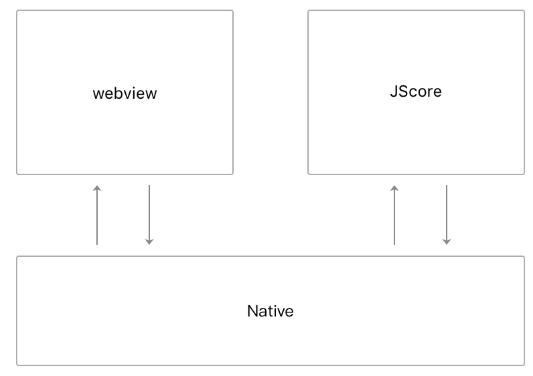

在iOS微信客户端上，小程序的JavaScript代码是运行在JavaScriptCore中，在Android微信客户端上，小程序的JavaScript代码是通过 X5 JSCore来解析的。而在微信开发者工具上我们采用了一个隐藏着的Webivew来模拟小程序的逻辑运行环境。

图9-7 微信客户端小程序运行环境模型简图

图9-8 微信开发者工具小程序运行环境模型简图
在微信开发者工具上WebView是一个chrome的 <webview /> 标签。与<iframe />标签不同的是，<webview/>标签是采用独立的线程运行的。
用于模拟小程序逻辑层的<webview/> 加载的链接是
http://127.0.0.1:9973/appservice/appservice
我们在开发者工具底层搭建了一个本地HTTP服务器来处理小程序模拟器的网络请求。其中：
./__asdebug/asdebug.js： 是开发者工具注入的脚本。
./__dev__/WAService.js：是小程序逻辑层基础库。
./util.js、./app.js、./index.js：开发者JS代码。
WebView在请求开发者JS代码时，开发者工具读取JS代码进行必要的预处理后，将处理结果返回，然后由WebView解析执行。虽然开发者工具上是没有对JS代码进行合并的，但是还是按照相同的加载顺序进行解析执行。
图9-9 appservice内容
WebView是一个浏览器环境，而JsCore是一个单纯的脚本解析器，浏览器中的BOM对象无法在JSCore中使用，开发者工具做了一个很巧妙的工作，将开发者的代码包裹在define域的时候，将浏览器的BOM对象局部变量化，从而使得在开发阶段就能发现问题。
图9-10 BOM对象局部变量化